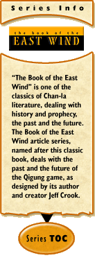

The Reality of Consequence
by Jeff Crook
January 2, 2001
"A life without risks or danger is a life in which nothing important can ever happen. It's also a pipe dream. Laura Miller in "Oz vs. Narnia" – Salon.com, December 28, 2000.
The last few weeks have been a learning process. Not in the mechanical aspects of game design, but in its social aspects. A couple of interesting discussions have been going in the Forums, one concerning the infamous mages’ Ring Test in Castle Marrach, and the other about Player vs. Player conflict as first presented in Sam Witt’s article Hate is Good. Both of these discussions involve an argument between risks and rewards in the gaming environment.
On one hand, we have the Ring Test. In this test, the hopeful mages were told to try on a certain magical ring. If the ring glowed one color, it indicated that the character had magical talent. If it glowed another color, the character had no magical talent and could not continue as a mage. The players had spent approximately six weeks of learning and role-playing to reach this point. And it was ultimately decided by a random factor over which the players had no influence, and no previous clue as to their odds of success other than the vague warning that not many characters would become mages.
Ostensibly, the reason for this test is to limit the total number of mages in the Castle both by making the process difficult and by introducing a considerable time factor to discourage power gamers. Although I argued vehemently against the rationale behind the manner in which this goal is achieved, I agree with its need in the contained Castle environment.
In Sam’s article about Player vs. Player conflict and in the resulting forum postings, the question arose of how much danger one player’s character should be allowed to pose to another player’s character. A survival of the fittest environment invites a free-for-all, while one that completely restricts players from attacking their fellows removes one of the most exciting and challenging features available in this type of gaming environment. The real problem lies in finding some place in the middle, as most solutions are only achieved through unrealistic limitations – like physically limiting where players can battle one another, or preventing high-level characters from attacking low-level characters.
I have come to the realization that the answers to these questions are not absolute. These things are largely matters of personal taste and the ways we like to imagine our fantasy worlds. At the head of this column, I quoted from an excellent article recently posted on Salon.com, "Oz vs. Narnia" by Laura Miller. The article compares the Wonderful Wizard of Oz to The Chronicles of Narnia – two fantasy epics that appeared at about the same time. Oz , she argues, is largely an American institution, while Narnia is more representative of British tastes in storytelling.
Oz is a place where, as its author stated, " ‘all the horrible and blood-curdling incident’ found in traditional fairy tales had been removed." Miller goes on to say that "the main characters are never in mortal danger; even when the Scarecrow is unstuffed by the flying monkeys and his cloth casing is thrown up in a tree, he can be easily restored." This is a little like the resurrection ability of most games, or the negative hit point rule.
"There is wickedness in Oz, but no evil; badness is simply a disagreeable temperament certain people have, not a terrible force at work in the world..." Thus, "Character is fixed, and no one really changes... The answer to life's perplexities is to realize how terrific you already are, an aspect of Oz that seems one of its most American traits." Dorothy is never in any real danger from the wicked witch, because she wears the kiss of the good witch. In effect, Dorothy has a consent system in place. She controls just how much danger she is willing to accept.
Because of this, the characters remain lovable but flat. And they engage mostly in mutual admiration and analysis. "Social conversation in Oz consists almost entirely of creatures explaining themselves to each other." Reflecting this, the most popular topic in the Skotos forums is the Characters (of Castle Marrach) topic in the Storyplayer’s forum.
It is important to remember the difference between the book and the movie. The movie doesn’t agree with the book in this aspect, for without real danger, the audience doesn’t really feel for the characters; their actions don’t matter. And this is the difference between fiction and storytelling gaming. It’s ok if a character is hurt in a book, but not in a game if it is your character that you have been working on for months. Some players tend to be a little more relaxed about their character’s injuries when those injuries are planned and executed according to a script, when they are sure they there isn’t any real danger of character death. But other players find this level of control and consent to be irritating at the very least.
This Oz-style of gaming is, of course, quite different from Narnia, where death, danger, and evil are very real aspects of the world. As Miller writes, "Lewis' depiction of what it means to be tempted by evil... and of the behavior -- from petty cruelty to grave betrayal -- that results, made a tremendous impression on me as a child. It communicated that, faced with often deceptive and even self-destructive emotions and impulses, I had choices to make in my life, choices that mattered."
‘Choices that mattered’ is the key phrase here. An OOC scripted scenario with the elements of danger and risk removed isn’t as fun to some people as one where a wrong decision can have immediate and far-reaching consequences. This is not to say it is better, only that it is different. Immediate and far-reaching consequences aren’t always the most enjoyable experiences. Sometimes they can be downright depressing. But some people feel that the reality of consequences adds excitement to the game.
This is what I intend to offer with Qigung – the reality of consequences. I do not intend to predetermine who ultimately triumphs. If the players who choose to ally themselves with the dark sun Zhi prove more powerful and resourceful, then they will come to rule the world. Choosing between good and evil isn’t going to be based solely on personal character preference. There will be real rewards and dangers that go along with these choices. And it will be a daily choice, not like writing Lawful Good on your character sheet. Good characters will be tempted. Evil characters will change. You’ll have to ask yourself, ‘what does my character really want?’
Let’s take two characters – Zhangzi Lu and Little Tortoise – and ask them what they want.
Zhangzi Lu is the son of a peasant from Shangxao province. His father is a direct lineage Xao, his mother of Chan and Xao mix. Zhangzi Lu wants nothing less than to be a Lohan monk. But upon knocking on the door of the monastery in Kangdao, he is turned away, because only a pureblood Chan may become a monk. There is no way around this prejudice. He could, perhaps, find a renegade monk or Lohan priest willing to take him as a student, but learning everything there is to learn about being a monk won’t make him a monk. Only Lohan can grant that title and the privileges and responsibilities that go with it. Unlike the Ring Test for Castle Marrach mages, he learns of his limitations at the very start. Zhangzi’s player may decide to create a new pureblood Chan character if he really wants to play a monk. Or he might decide to seek out a sorcerer instead and apprentice himself to magic. His father’s direct Xao lineage allows him to do this, for only a person of direct Xao lineage may be taught the deepest mysteries of magic from a Xao sorcerer.
Little Tortoise is the daughter of a Fong nobleman and a Chan concubine. Because she is the daughter of a concubine, she is a slave and will become a concubine when she is old enough. But she escapes, dreaming of becoming a sorcerer. Upon arriving at the master’s tower, she is turned away, because she is not Xao. Because of her father’s lineage, she cannot become a Lohan monk, and because she is an escaped slave, she will never be allowed into the Kang. But she is still intent on becoming a mage. Despite her lack of Xao blood, this door is not closed to her, but her training will be more difficult. She will have to seek out masters willing to teach her or find scrolls to learn her spells and talismans.
Zhangxi Lu is now bitter because he was turned away from Lohan. His racial prejudices are deepened as he attends the all-Xao school of sorcery, and as he is inducted into the deeper mysteries, he learns of his master’s allegiance to the dark sun Zhi. As a favorite pupil of the master, he is offered the chance to enter into the secret society of which his master is a member, a society whose ultimate goal is the victory of darkness. Here he will be taught the deepest and most evil secrets, his power will increase ten-fold, but if he is discovered or revealed, he will likely be put to death. And if he betrays or tries to leave the order, he will die a most horrible death. He must make a choice, and that daily.
Little Tortoise is not angry because she was turned away. She understands the reasons for the secrets and mysteries. But as she continues her training, learning wherever she can find knowledge, she also stumbles upon the cult of Zhi and the promises of power it offers. Because she is not Xao, she will never be accorded the status and access to the deeper mysteries that Zhangzi will receive, but this path could still open doors of learning she would never open otherwise. She, too, must make a choice.
Who will choose which path? Who can say. Failure to make the correct choices on a daily basis poses the very real danger of character death. That’s what makes the game fun for some people.
For other players, there will be plenty of other options. Not everybody needs to make life-and-death choices to have fun. The social interactions will be numerous and varied. But the deepest storylines will involve real choices with real consequences that won’t be discussed beforehand to gauge the level of personal danger. If you make an enemy, that enemy might have your character killed, and without warning you OOC. If he can get away with it by avoiding the in-game consequences, such as investigation through mundane and magical means, then that is how the story will resolve.
Lesson – be careful how you make enemies.